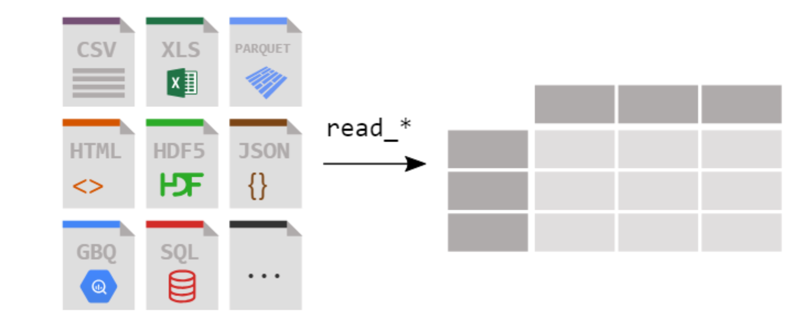

Data wrangling transforms raw data into a structured format.
The process includes collecting, tidying, and preprocessing raw data so that it can be easily analyzed and visualised. We will use pandas for these tasks.
Reading
What types of data files do you generate in your research?
First, we need to access our data and store it in a variable.
Pandas has a function that allows us to read in an excel document: read_excel().
# import pandas, aliased as pdimport pandas as pd# Import an Excel file called "example" from the data folderdf = pd.read_excel('data/example_proteins.xlsx', sheet_name='Sheet1')# Visualise the first few rowsprint(df.head(2))
Protein Molecular Weight (kDa) Function \
0 HBB_Hemoglobin 64.5 Oxygen transport
1 ACTA1_Actin 42.0 Cell structure
Subcellular Location
0 Cytoplasm
1 Cytoplasm
# Visualise the first few rowsdf.head(2)
Protein
Molecular Weight (kDa)
Function
Subcellular Location
0
HBB_Hemoglobin
64.5
Oxygen transport
Cytoplasm
1
ACTA1_Actin
42.0
Cell structure
Cytoplasm
Pandas has many other read functions for all types of data.

# From a plain text document:df = pd.read_table('data/example_proteins.txt', delimiter='\t')# From a csv document:df = pd.read_csv('data/example_proteins.csv')
Cleaning columns
Cleaning standardises and simplifies a dataset.
This might involve adjusting column names, correcting data types, and separating pieces of information from one column into many.
We can access the column names for a dataframe using .columns.
protein object
molecular_weight_kda float64
function object
subcellular_location object
expression_log2 float64
time_h int64
donor_id object
dtype: object
Often string data are composites joined by one or more delimiters. To use these data elements we need to separate elements into different columns using the .str and .split methods.
df['protein']
0 HBB_Hemoglobin
1 ACTA1_Actin
2 COL1A1_Collagen
3 INS_Insulin
4 MYH7_Myosin
...
685 COL5A1_Collagen type V
686 COL6A1_Collagen type VI
687 LAMB2_Laminin beta 2
688 ND1_NADH dehydrogenase
689 ATP5F1_ATP synthase
Name: protein, Length: 690, dtype: object
Often string data are composites joined by one or more delimiters. To use these data elements we need to separate elements into different columns using the .str and .split methods.
# Assign split strings to separate columns using 'expand' keyworddf[['protein_name', 'gene']] = df['protein'].str.split('_', expand=True)df.head(2)
protein
molecular_weight_kda
function
subcellular_location
expression_log2
time_h
donor_id
protein_name
gene
0
HBB_Hemoglobin
64.5
Oxygen transport
Cytoplasm
0.111781
2
A17362
HBB
Hemoglobin
1
ACTA1_Actin
42.0
Cell structure
Cytoplasm
0.203740
2
A17362
ACTA1
Actin
df.to_csv(f'data/clean_data.csv')
These operations will be very dataset specific, and each dataset will likely require a combination of approaches.